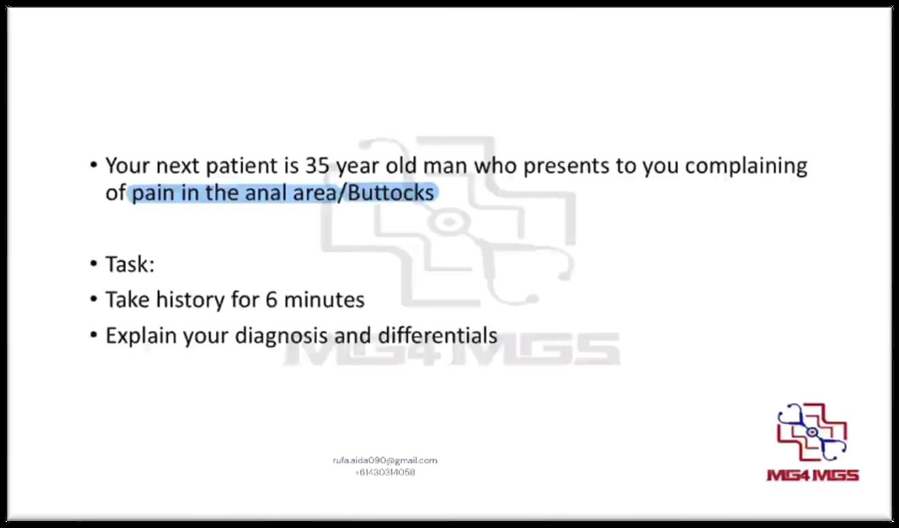
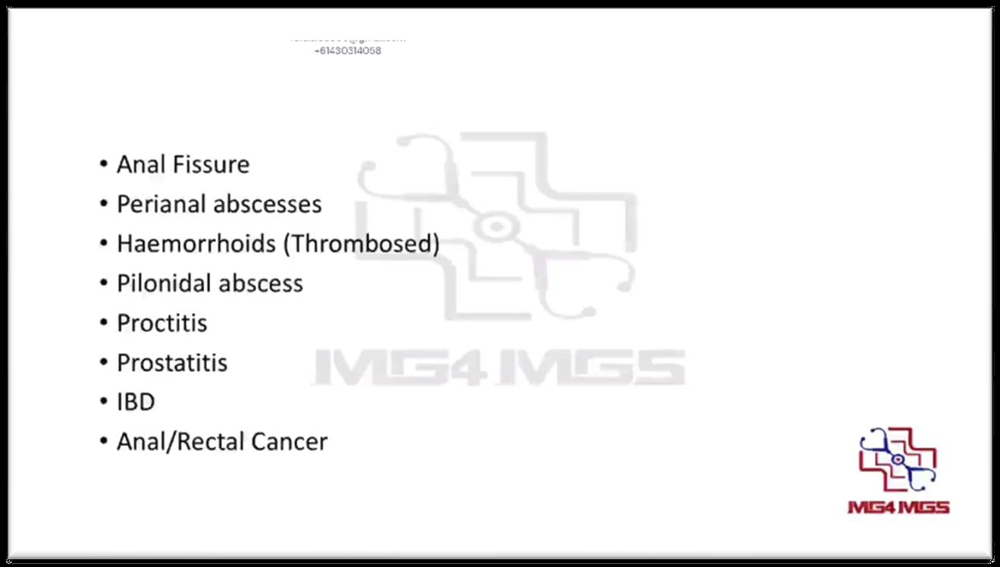
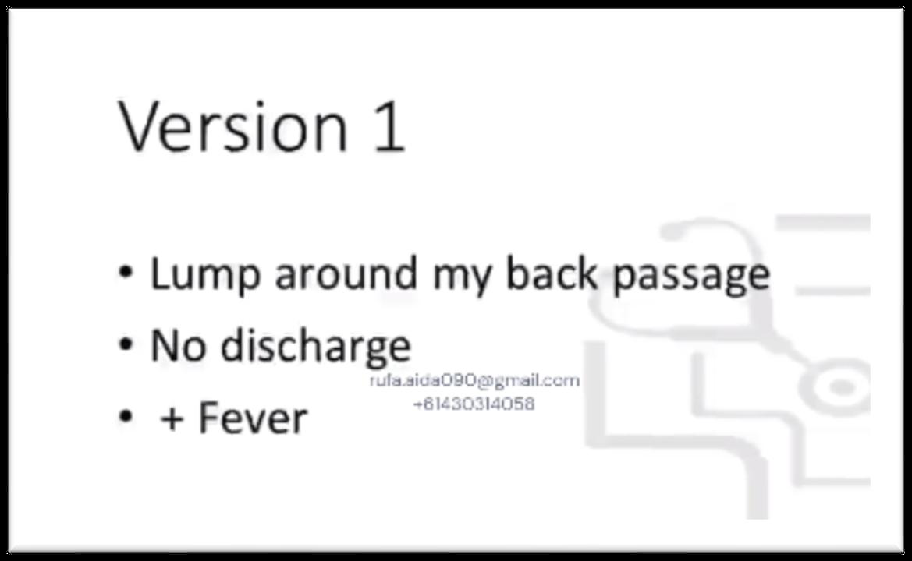
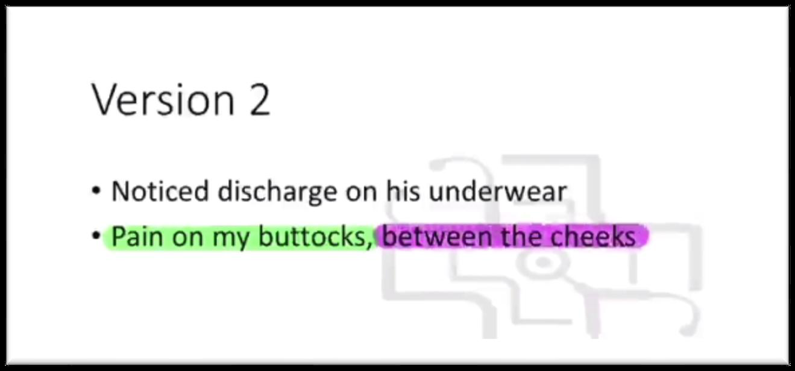
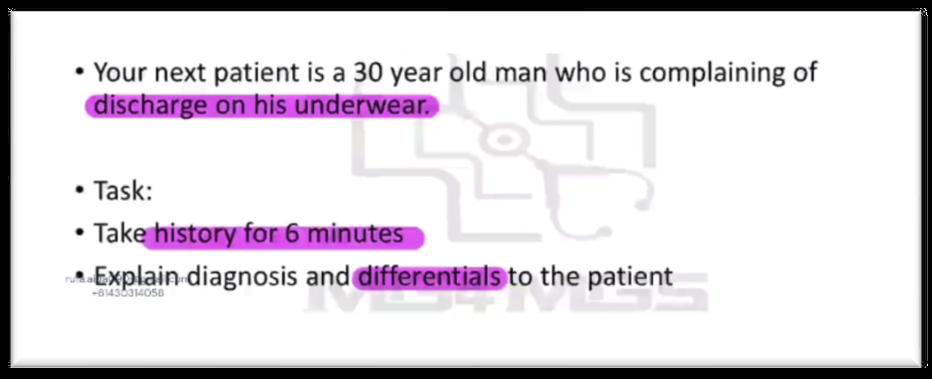
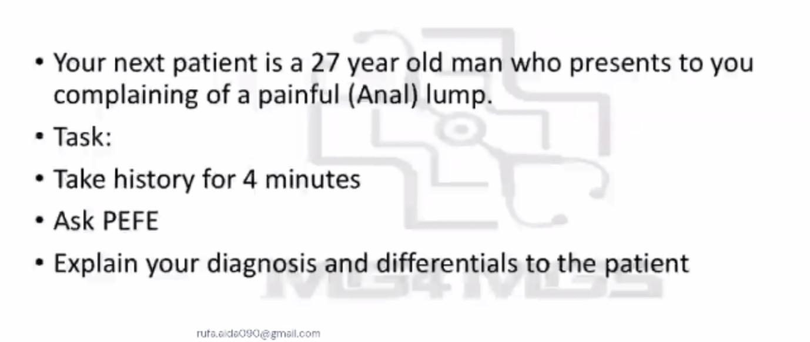
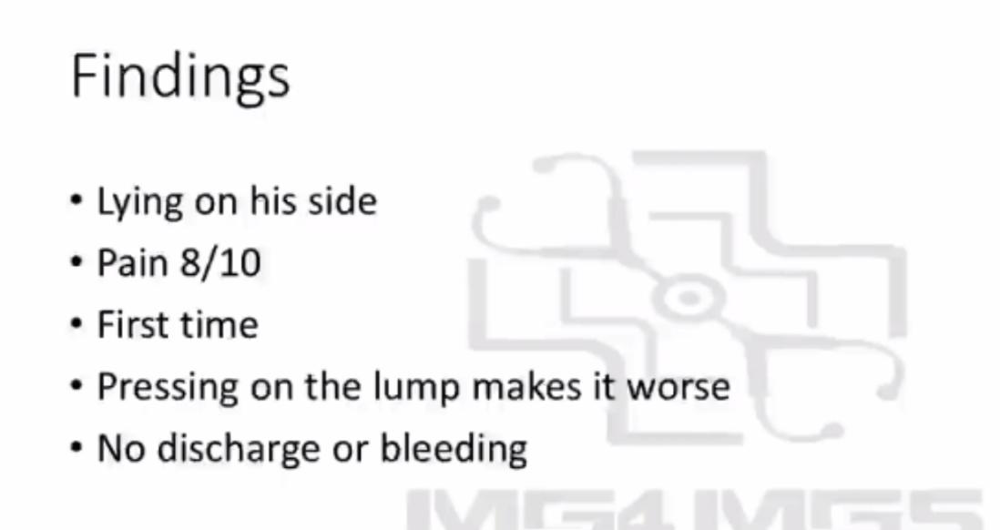
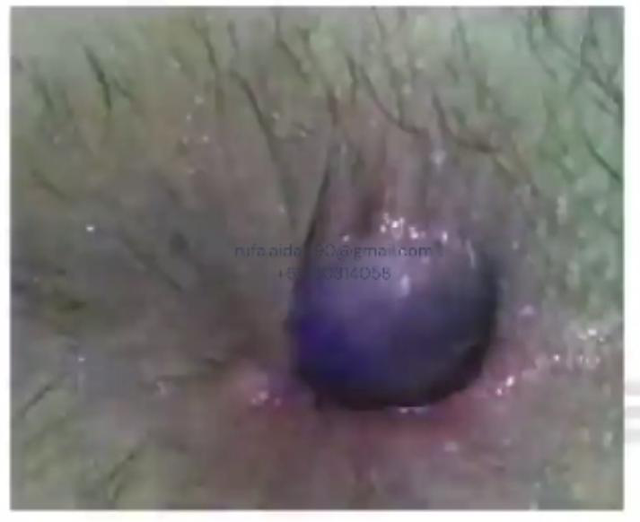

Source: Dr. Amir workshop — GIT 2026 / class 7 Lower GI (Aug 2026 drop) · Specialty: gastroenterology
Anal pain became a recurring AMC OSCE group from the 2022 online exam onward. Early stations were history-only; more recent stations add a physical examination component and frequently present a clinical photograph of the perianal region to guide the diagnosis.
Key examiner traps: distinguishing pain that is worse on defecation (fissure, thrombosed haemorrhoid, proctitis) from pain unrelated to defecation, and recognising the diagnostic photo (e.g. thrombosed haemorrhoid, pilonidal sinus, fistula opening, or an ulcerated bleeding lesion suggesting anal cancer).
1. Introduction - hand hygiene, name and role, confirm patient's name, consent, open question and respond to concern.
2. Explore the complaint (SIQORAA / timing):
If a lump is also present: site (if not given), ask the patient to describe it, is it painful to touch, any bleeding or discharge, can it be pushed back in? With only ~4 minutes, run a faster SIQORAA - do not re-ask site/timing already known.
3. Differential-directed questions:
4. Past medical history and family history.
Photo clues: a midline lesion between the buttock cheeks suggests pilonidal sinus/abscess; a skin opening discharging without infective/malignant features suggests fistula-in-ano; an ugly, irregular, surface-bleeding lesion suggests anal cancer.
Perianal abscess: "An infection close to the back passage causing a collection of pus."
Pilonidal abscess (hair cyst): "A pocket in the skin containing an ingrown hair; when it gets infected and fills with pus we call it an abscess. The midline site supports this."
Perianal fistula: "A tunnel-like passage between the bowel and the skin that drains stool through an opening. The photograph shows an opening with no features of infection or cancer."
Always list the differential diagnoses considered, led by the red-flag diagnosis (anal/bowel cancer).








Reviewed by: history-taking-expert (Australian clinical supervisor) · fact-checked against the irStudy medical textbook RAG index.